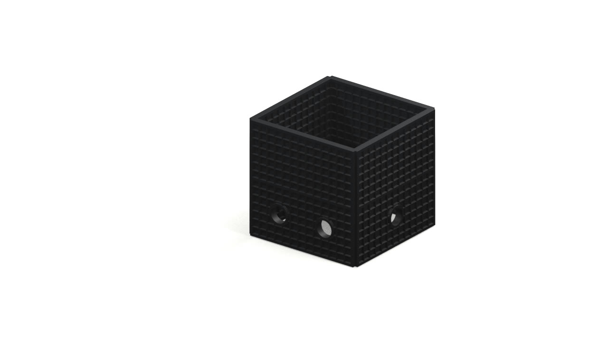
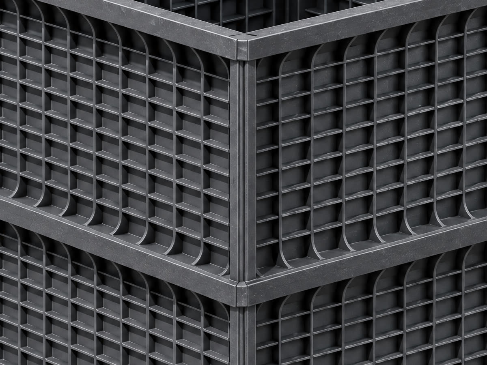

REDES SUBTERRÁNEAS · HIDROSTANK · LAYEGAS · 3M
Una cámara de acceso.
Lista para instalar.
Primero, el resultado: un punto de acceso modular para integrar a una red subterránea.
Explorar la solución02 / SE DESARMA
Se abre en paneles,
no en escombros.
La visualización revela una construcción por partes. La configuración real se define por referencia y proyecto.
Conocer el sistema03 / SE GUARDA
De cámara
a caja.
Los componentes se apilan para pensar otra logística. Dimensiones y embalaje dependen del modelo.
Ver productos04 / MANIPULACIÓN
La maniobra empieza
por la ficha.
El plano de carga manual está pendiente. Peso, dotación y método de manipulación requieren validación técnica.
Consultar una referencia05 / TRANSPORTE
Una caja. Un
utilitario liviano.
Una propuesta visual de traslado compacto. Antes de planificarlo, confirmá medidas, carga y condiciones de transporte.
Explorar lo que sigueVisualización conceptual · el plano de carga manual está pendiente. Peso y maniobras requieren ficha técnica.
01 / PRODUCTOS · REDES SUBTERRÁNEAS
PRODUCTOS QUE SE COMPLEMENTAN.Una línea.
Muchas aplicaciones.
Acceso, canalización, localización y protección para telecomunicaciones, energía y gas.

El acceso se configura.
Paneles desmontables para configurar un punto de inspección. Elegí la referencia según las condiciones de tu obra.
Ver catálogo oficialFoto suministrada · 3D conceptual Meshy 7.1 de alta calidad, 48,5 MB; carga opcional; no sirve para medir.
02 / ANATOMÍA DE UNA SOLUCIÓN
EL OBJETO. SUS POSIBILIDADES.
Representación generada. Consultá la ficha de la referencia.Pensado por partes.
Elegido como sistema.
Acceder. Conducir. Proteger.
Cada decisión se conecta con la siguiente.
El acceso se configura.
Referencia, dimensiones, entradas y tapa se definen según el proyecto y la documentación del producto.
EN FOCO / LA RED EN DETALLE
Acercate.
Hay más por descubrir.



Deslizá o usá las flechas para explorar. Referencias, entradas y método de instalación se validan con documentación técnica.
03 / COMUNITEL
PRODUCTOS. INGENIERÍA. OBRA.Ver el conjunto.
Conectar
las partes.
Una mirada integral sobre la infraestructura. Nuestro punto de partida es tu proyecto; no una pieza aislada.
Acceso, canalización, localización y protección trabajan juntos. Elegir la referencia es una parte de la decisión; entender dónde y cómo se aplica también.
Del proyecto al terreno04 / INGENIERÍA & OBRA
Servicios oficialesTu proyecto.
Nuestra conversación.
El alcance y las condiciones
se acuerdan para cada obra.
05 / POR QUÉ PENSAR MODULAR
LA SOLUCIÓN COMPLETA.Más allá
de la pieza.
Transporte. Manipulación.
Instalación. Mantenimiento.
Logística
El traslado y el izaje se evalúan según masa y geometría de la pieza.
Paneles desmontables y apilables. Embalaje y manipulación según referencia.
Configuración
Geometría definida por la cámara elegida.
Combinación de módulos según proyecto y ficha.
Durabilidad
Evaluar material, juntas y condiciones del suelo.
Evaluar material, tapa, cargas y entorno de uso.
Comparación cualitativa, sin pesos, ahorros ni tiempos medidos.
Maniobras, dotación y maquinaria requieren validación técnica.
06 / LA PRÓXIMA CONEXIÓN
Lo que sigue
empieza acá.
Contanos qué necesitás conectar,
dónde y en qué etapa está tu proyecto.
Av. Eduardo Madero 2250 · Del Viso
Buenos Aires, Argentina